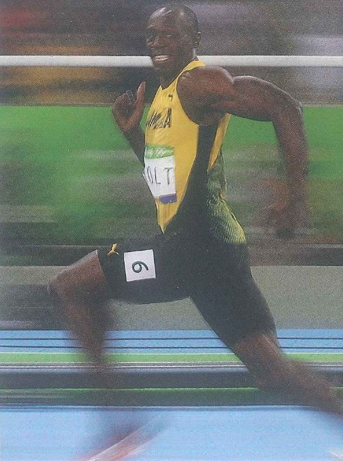
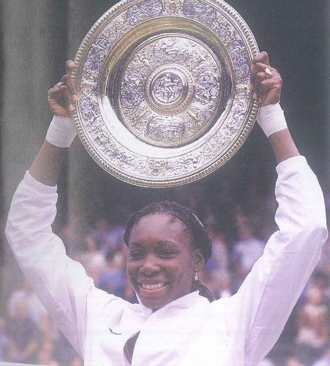

Mục tiêu bài học & khởi động
Mục tiêu bài học
Sau bốn tiết học, học viên có thể:
- Gọi tên từ và cụm từ của 4 nhóm: thể thao và thi đấu, những cuộc thi kỳ quặc và luật chơi, người chơi thể thao, thắng thua và quan điểm.
- Giải thích must, have to, can, don’t have to, mustn’t và can’t cho biết điều gì về một quy định: bắt buộc, được phép, không cần thiết hay không được phép.
- Nhận biết cách -er, -ist và player biến tên môn thể thao thành tên người chơi (golfer, cyclist, chess player) và cách compete sinh ra competitor, competition, competitive.
- Dùng dạng -ing trong ba chức năng: làm chủ ngữ, đứng sau giới từ (good at, afraid of) và đứng sau love, hate, enjoy, don’t mind.
- Tìm luật lệ, sự kiện và ý kiến trong bài báo Crazy competitions!, trong Track 9–12 và trong các bài PET Reading, Listening bổ sung.
- So sánh các lập luận ủng hộ và phản đối thể thao thi đấu trong trường học, rồi xác định người nói nào trong Track 11 có quan điểm gần với bạn nhất.
- Mô tả và đánh giá môn thể thao bạn yêu thích (Topic 4) hoặc một trò chơi nhiều người chơi ở Việt Nam (Topic 6) theo khung 7 bước.
- Nâng cấp một câu cơ bản về môn thể thao của bạn qua từng bậc, từ Level 1 (cơ bản), qua Level 2 (chi tiết) đến Level 3 (mệnh đề), và thử sức với Level 4 (học thuật).
- Coi trọng tinh thần đồng đội và fair play, trên sân đấu cũng như khi làm việc theo cặp, theo nhóm trên lớp.
Lead-in 1 · Vận động viên bơi, xe đẩy siêu thị và nhà vô địch: quan sát, phỏng đoán và nêu cảm nghĩ

- Câu 1‘Describe what you can see: the water, the caps and the arms. Roughly how many swimmers are there?’
- Câu 2‘Is this a race or a swim for fun? What in the photo tells you?’
- Câu 3‘How far can you swim without stopping, and where did you learn?’
Bài mẫu
The sea is bright blue and full of white splashes, and nearly everyone has a pink or a white cap on. I’d say there are at least two hundred swimmers, all heading the same way at the same moment, so it has to be the start of a race. I learned to swim in the river near my grandparents’ house when I was nine, and these days I can manage about four hundred metres in a pool before I need a rest.
Dịch nghĩa
Mặt biển xanh biếc, bọt nước tung trắng xóa, và gần như ai cũng đội mũ bơi màu hồng hoặc màu trắng. Tôi đoán có ít nhất hai trăm người đang bơi, tất cả cùng lao về một hướng vào cùng một lúc, nên chắc chắn đây là lúc xuất phát của một cuộc đua. Tôi học bơi ở con sông gần nhà ông bà năm chín tuổi, và giờ tôi bơi được khoảng bốn trăm mét trong bể rồi mới phải nghỉ.

- Câu 1‘What are these people pushing, and what is lying on top of it?’
- Câu 2‘This is a race between teams. What do you think the rules are?’
- Câu 3‘If your class entered this race, how would you decorate your cart?’
Bài mẫu
They’re pushing an ordinary supermarket cart, and on top of it there’s an enormous plastic leg with a bare foot. My guess is that each team needs one cart, and maybe you’re out if it falls apart before the end. Our class would turn ours into a giant syringe, since we’re all going to be doctors anyway.
Dịch nghĩa
Họ đang đẩy một chiếc xe đẩy siêu thị bình thường, trên xe là một cái chân nhựa khổng lồ với bàn chân trần. Tôi đoán mỗi đội cần một chiếc xe, và có khi đội nào để xe vỡ tung trước khi về đích thì bị loại. Lớp tôi sẽ biến xe của mình thành một chiếc bơm tiêm khổng lồ, đằng nào cả lớp cũng sắp thành bác sĩ cả.

- Câu 1‘Describe the player: his hair, his face, his clothes and what he is holding.’
- Câu 2‘What game do you think he is playing? Why is everyone so dirty?’
- Câu 3‘Have you ever played a game in heavy rain or mud? How did it end?’
Bài mẫu
His hair is in long dreadlocks, his face is screwed up, and his vest is so muddy you can hardly read the letters on it. He’s carrying an oval ball, so it looks like American football, played on purpose in a field that someone has turned into a swamp. After a heavy storm a few weeks ago we kicked a ball around the training ground, and by the end nobody could tell which team anyone was on.
Dịch nghĩa
Anh ấy để tóc tết dài kiểu dreadlocks, mặt nhăn lại, còn chiếc áo ba lỗ thì lấm bùn đến mức khó mà đọc được chữ trên áo. Anh ấy đang ôm một quả bóng hình bầu dục, nên trông như môn bóng bầu dục Mỹ, lại còn cố tình chơi trên một bãi đất đã bị biến thành đầm lầy. Sau một trận mưa bão lớn cách đây vài tuần, bọn tôi ra sân tập đá bóng, và đến cuối buổi chẳng ai còn nhận ra ai ở đội nào.

- Câu 1‘Describe the four men: their clothes, their hats and their beards.’
- Câu 2‘What do you think the judges are looking for in this competition?’
- Câu 3‘Which man would you give the prize to, and why?’
Bài mẫu
The man on the left looks like a snowman in his white suit and grey top hat, and the one in pink has a cowboy hat to match his suit. I imagine the judges look at the size and shape of each beard, but also at how well the clothes go with it. I’d pick the man on the right, because his moustache curls up at both ends like two perfect snail shells.
Dịch nghĩa
Ông bên trái trông như người tuyết trong bộ com-lê trắng và chiếc mũ chóp cao màu xám, còn ông mặc đồ hồng thì đội chiếc mũ cao bồi cùng màu với bộ com-lê. Tôi nghĩ ban giám khảo xem kích thước và hình dáng của từng bộ râu, và cả chuyện trang phục có hợp với bộ râu không. Tôi sẽ chọn ông bên phải, vì bộ ria của ông cong vểnh lên ở cả hai đầu như hai chiếc vỏ ốc sên hoàn hảo.

- Câu 1‘Describe the runner: his clothes, his body and his face.’
- Câu 2‘He is looking sideways and smiling in the middle of a race. What does that tell you about him?’
- Câu 3‘Who is the fastest runner you know? Have you ever raced against them?’
Bài mẫu
He’s in a yellow vest with green down the sides, the name on his chest says BOLT, and you can see every muscle in his arms and legs. A sprinter who smiles sideways halfway through a race must be pretty sure he’s winning, or he’s simply having the time of his life. The fastest runner I know is my roommate, who beat me by about thirty metres in a 400-metre run during our first week at the academy.
Dịch nghĩa
Anh ấy mặc áo ba lỗ màu vàng có sọc xanh lá dọc hai bên, trên ngực in tên BOLT, và nhìn rõ từng thớ cơ trên tay chân. Một vận động viên chạy nước rút đang đua giữa chừng mà còn quay sang bên cười thì hẳn phải khá chắc mình sẽ thắng, hoặc đơn giản là anh ấy đang tận hưởng khoảnh khắc tuyệt nhất đời mình. Người chạy nhanh nhất tôi biết là bạn cùng phòng của tôi, cậu ấy bỏ xa tôi khoảng ba mươi mét trong một lượt chạy 400 mét ngay tuần đầu tiên ở Học viện.

- Câu 1‘Describe the player, her clothes and the trophy. Where do you think she is?’
- Câu 2‘How do you think she feels at this moment? How can you tell?’
- Câu 3‘Have you ever gone up on a stage to collect something? What was it for?’
Bài mẫu
She’s dressed completely in white, with white wristbands, and she’s lifting a huge round silver plate covered in patterns. With a crowd behind her and a smile that big, I think she’s just won a major tennis final. The only time I’ve gone up on a stage to collect anything was in grade 11, when I came second in a provincial biology contest and walked off with a set of anatomy books.
Dịch nghĩa
Cô ấy mặc toàn đồ trắng, đeo băng cổ tay trắng, và đang giơ cao một chiếc đĩa bạc tròn rất to, phủ kín hoa văn. Phía sau là cả một đám đông, lại thêm nụ cười rạng rỡ thế kia, tôi nghĩ cô ấy vừa thắng một trận chung kết quần vợt lớn. Lần duy nhất tôi lên sân khấu nhận thưởng là hồi lớp 11, khi tôi đạt giải nhì kỳ thi học sinh giỏi môn Sinh cấp tỉnh và mang về một bộ sách giải phẫu.
Lead-in 2 · Chiến thắng, luật chơi và thể thao: đồng ý hay không đồng ý?
1 · Winning is the most important thing in sport.
Bài mẫu
I disagree. In my first year at high school our volleyball team lost every single match, and those Saturday mornings are still some of my happiest memories. You find out a lot more about your friends when you’re losing together.
Dịch nghĩa
Tôi không đồng ý. Năm lớp 10, đội bóng chuyền của chúng tôi thua tất cả các trận, vậy mà những buổi sáng thứ Bảy ấy vẫn là một trong những kỷ niệm vui nhất của tôi. Cùng nhau thua trận, ta hiểu bạn bè mình hơn nhiều.
2 · Crazy competitions are a waste of time and money.
Bài mẫu
Not at all. Last month our dormitory held a race where each team carried a full bucket of water across the yard on a stretcher, and I hadn’t laughed that hard in months. It cost us nothing but a few buckets, and it got people talking who had never said a word to each other before.
Dịch nghĩa
Hoàn toàn không. Tháng trước, ký túc xá của chúng tôi tổ chức một cuộc đua, mỗi đội phải khiêng một xô nước đầy trên cáng băng qua sân, và đã mấy tháng rồi tôi mới cười nhiều đến thế. Cả cuộc thi chỉ tốn vài cái xô, mà lại giúp những người trước giờ chưa nói với nhau câu nào bắt đầu trò chuyện.
3 · Every school should have a competitive sports day.
Bài mẫu
Only if it isn’t just a show for the stars. On sports day at my old school, the same six runners raced in every final while the rest of us sat on the steps in the heat for three hours with nothing to do. If a sports day is really for the whole school, then the whole school has to get a chance to compete.
Dịch nghĩa
Chỉ khi đó không phải là sân khấu riêng của mấy ngôi sao. Ở ngày hội thể thao trường cũ của tôi, vẫn sáu bạn ấy chạy chung kết ở mọi nội dung, còn những người khác ngồi trên bậc thềm dưới trời nắng suốt ba tiếng mà chẳng có việc gì làm. Nếu ngày hội thể thao thật sự dành cho cả trường, thì cả trường phải có cơ hội thi đấu.
4 · Watching sport on TV is as good as playing it.
Bài mẫu
I don’t think so. Watching a big match with friends on a Sunday afternoon is great fun, but my heart rate hardly changes. A twenty-minute jog round the parade ground does far more for my body than ninety minutes on the sofa.
Dịch nghĩa
Tôi không nghĩ vậy. Chiều Chủ nhật cùng bạn bè xem một trận đấu lớn thì rất vui, nhưng nhịp tim tôi gần như chẳng thay đổi. Hai mươi phút chạy bộ quanh thao trường có ích cho cơ thể tôi hơn nhiều so với chín mươi phút ngồi trên ghế sofa.
5 · Strict rules make a game more fun, not less.
Bài mẫu
I agree, up to a point. When we play basketball after class with nobody to referee, almost every game ends in an argument about fouls. Clear rules mean you can stop shouting at each other and actually play.
Dịch nghĩa
Tôi đồng ý, ở một mức độ nào đó. Khi chúng tôi chơi bóng rổ sau giờ học mà không có ai làm trọng tài, gần như trận nào cũng kết thúc bằng một trận cãi nhau về lỗi. Có luật rõ ràng thì mọi người thôi quát nhau và thật sự chơi bóng.
6 · Doctors should do sport to set an example for their patients.
Bài mẫu
I’d agree. A doctor who tells you to exercise and then gets out of breath on one flight of stairs isn’t very convincing. My uncle is a surgeon who cycles eight kilometres to the hospital every morning, and his patients are always asking him how he finds the energy.
Dịch nghĩa
Tôi đồng ý. Một bác sĩ khuyên bạn tập thể dục mà mới leo một tầng cầu thang đã hụt hơi thì khó mà thuyết phục được ai. Chú tôi là bác sĩ phẫu thuật, sáng nào cũng đạp xe tám cây số đến bệnh viện, và bệnh nhân của chú lúc nào cũng hỏi chú lấy đâu ra lắm sức thế.
- I’d go along with that, because …
- That works for …, but it doesn’t work for …
- From my own experience, …
- I’m not so sure. For example, …
- It really comes down to …
Lead-in 3 · Nghe · Track 9 · The Ironman
Nghe một người nói về bức ảnh và chọn đáp án đúng nhất (SB tr. 21 Ex 2)
An Ironman competition has three different races. In the swimming race, the competitors swim for 3.86 kilometres. Then they cycle for 180 kilometres, and finally they run a marathon at the end. The world final of the Ironman Championship is in Hawaii and it’s very competitive. Every year, around one thousand, nine hundred people compete against each other in front of thousands of spectators.
Dịch nghĩa
Một cuộc thi Ironman gồm ba phần thi khác nhau. Ở phần bơi, các vận động viên bơi 3,86 km. Sau đó họ đạp xe 180 km, và cuối cùng chạy hết một cự ly marathon. Vòng chung kết thế giới của giải vô địch Ironman diễn ra ở Hawaii và cạnh tranh rất gay gắt. Năm nào cũng có khoảng một nghìn chín trăm người tranh tài trước hàng nghìn khán giả.
- What sport is it? Which of the three Ironman races does the photo show?
- Do you like this kind of sport? Why? / Why not?
Bài mẫu · câu 1
It’s a triathlon, and the photo shows the first of the three races, the swim, so everyone is still bunched together in one enormous crowd. The caption in the coursebook says these athletes are in the sea at Cozumel, in Mexico, fighting for a place in the Ironman championship.
Dịch nghĩa
Đây là một cuộc thi ba môn phối hợp, và bức ảnh chụp phần thi đầu tiên trong ba phần, tức phần bơi, nên mọi người vẫn còn túm tụm thành một đám đông khổng lồ. Chú thích trong giáo trình cho biết các vận động viên này đang ở vùng biển Cozumel, Mexico, tranh suất dự giải vô địch Ironman.
Bài mẫu · câu 2
I like watching it more than doing it. On a good day I can run ten kilometres, but swimming in the open sea with hundreds of elbows flying past my head sounds terrifying. One day I might try a short triathlon, just not this one.
Dịch nghĩa
Tôi thích xem môn này hơn là tự mình thi. Hôm nào khỏe thì tôi chạy được mười cây số, nhưng bơi ngoài biển khơi giữa hàng trăm cái khuỷu tay vụt qua đầu thì nghe đã thấy sợ. Biết đâu một ngày nào đó tôi sẽ thử một cuộc thi ba môn phối hợp cự ly ngắn, chỉ là không phải cuộc thi này.
- It looks like … to me.
- What I like about it is …
- I’d rather watch it than …, because …
- I could never …, but I’d like to try …
Lead-in 4 · Bạn đã biết bao nhiêu từ của mỗi nhóm?
Think of the last match or race you watched. Which words do you know for the event, the people in it and the result?
Which strange competitions have you heard of, and which words do you need to say what players can and can’t do?
Footballer, cyclist, tennis player … how many names for sportspeople can you write in two minutes?
Think of a game you won or lost. List the words you use for feelings, opinions and team spirit.